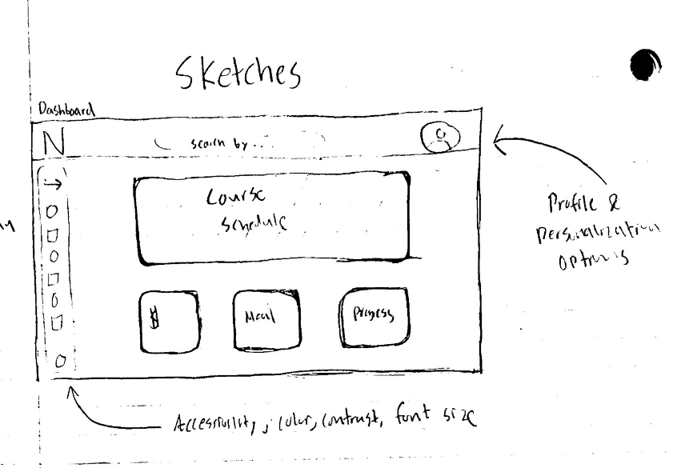
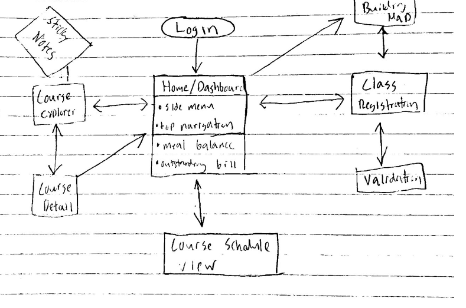
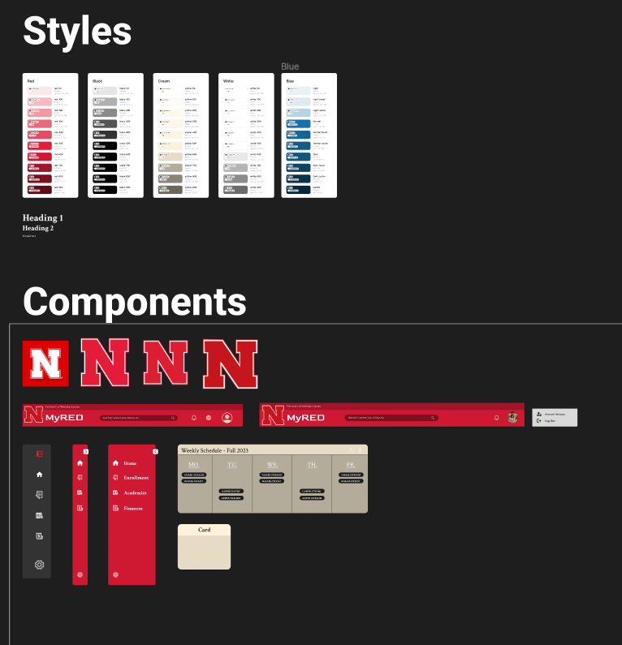
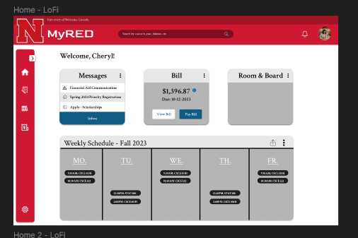

A common pain point for a college student at the University of Nebraska-Lincoln is navigating the system responsible for all of the core things a student needs – bills, enrollment, and housing among many others. I know this firsthand, and I know plenty of peers who agree. Going off to college is an exciting chapter of life with enough stressors as is. A learning curve to be able to pay your bill and enroll in courses shouldn’t add to this stress. MyRED needs to be modernized and more intuitive for new users/students. If I remember one thing from my user interfaces course, it is that feedback and user testing are king. Luckily, the thousands of people on campus around me every day are my exact target audience. I know the problem firsthand, I know how to relate to my target audience, and I have the talent to complete this project. With my objective defined and my users in mind, I set out to tackle this design on my own. I chose to build a desktop design because laptops are everywhere on a college campus. Nearly everyone I asked uses the desktop version of MyRED to accomplish their tasks. I wanted to modernize the part of the application that most people use. Now it was time to define a broad user story that would motivate my design choices and workflows. I knew I wanted to focus on a new, out-of-state student for my story. One of the shortcomings of the current MyRED portal is the learning curve: it’s usable, but it takes more getting used to than it should. A new out-of-state student will have plenty of stressors grabbing their attention so I want to focus on keeping this as simple and easy as possible for them. My user story focused on Sally, a busy freshman Biology student trying to pay her bill for the first time. To accommodate her needs, I wanted to give the web app a very modern feel and have all of the common actions in one place. I used a card layout and consistent icons to clearly define where a user should go to pay their bill. Take a look at some of my early concept sketches below:
 In order for everything to have a consistent look and feel, I had to start with creating a design system to use. Luckily for revamping MyRED, the colors were already chosen for me. I generated color palletes for all of the current primary colors to see what I could use for the modernization. Cream is a challenging color to use well, but I was determined to include it because I like the way it looks next to the red. Below are images of my early design system and first mockups. Things are starting to take shape, but we have a long way to go.
 After I wasn't pleased with the initial mockups above, and after running some of the early concepts by users, I decided on doing a major rework. Here is a prototype after a few more iterations. The user can view the dashboard, their bill breakdown, and pay their bill resulting in a balance of 0. This prototype was done before conducting official user tests, although I was able to run some ideas by my target audience because there are so many people around me who use MyRed every day. I was determined to use the cream color from my design system, so I utilized a dynamic modern gradient for the background on the dashboard.
As previously mentioned, user testing is the most valuable aspect of the project. A lot of what I learned from the user tests is that there is power in the details. Often times getting a second pair of eyes on things is good, because I've been staring at the same design for hours. There was an overwhelming dislike for the gradient that (used) to pop up when hovering over a course on the course schedule. There was a weird drop shadow on the arrow attached to the floating side bar. I also realized the need to limit motion in order to make the design more accessible. Overall, I'm happy with the evolution of this design. Many of the core components from my first sketch of this project are evident in the final prototype. Two of the values I selected for this interface are usefulness and growth. I think this prototype conveys these values well. Common actions are in one spot on the dashboard, and it is easy to get things done. In terms of growth, I wanted to make the app a more engaging experience for students, where they can see their degree progress and realize how far they've come.